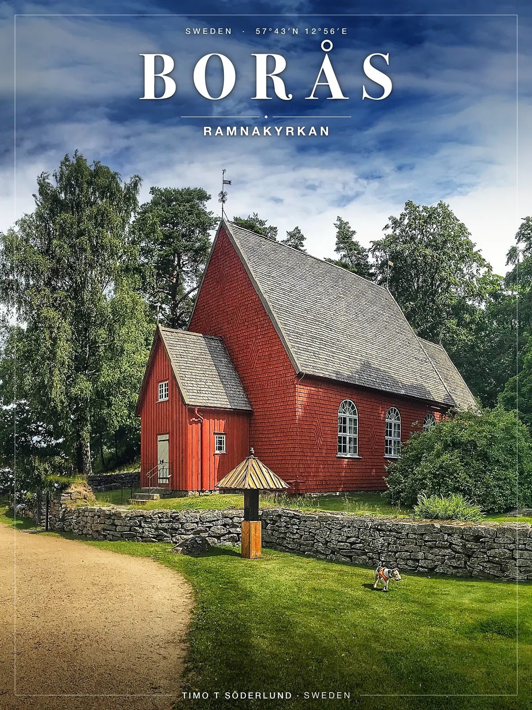

Ramnakyrkan
Historic Timber Church (1690–1691) · Ramnaparken, Borås, Sweden
English
Originally built in Kinnarumma in 1690–1691 and carefully moved to Ramnaparken in Borås, Sweden between 1912 and 1914, Ramnakyrkan stands as a timeless emblem of Swedish timber craftsmanship. Clad in traditional Faluröd wooden shingles and framed by dry-stone walls, tall birches, and summer greenery, this poster by Timo T Söderlund celebrates the living heritage of Boras, Sweden.
Svenska
Ursprungligen uppförd i Kinnarumma 1690–1691 och flyttad till Ramnaparken i Borås 1912–1914 står Ramnakyrkan som ett tidlöst smycke av svenskt träbyggnadshantverk. Klädd i faluröda spån och inramad av gammal stenmur, björkar och sommargrönska hyllar denna poster av Timo T Söderlund en av Borås mest älskade kulturmiljöer.
Photographer & Edition: Timo T Söderlund · Borås, Sweden (2026)